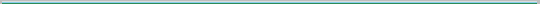

Linux Docker Containers
Hosted by GitHub

-
ldc is in pre-release as version 0.1.0 during transition
from independent projects to a more coherent, single project to support
fast creation of Docker container applications based on
the LDC Framework
project.
- a container structure which lends itself to replication within each created container, including those used as a base for a new container;
- a directory structure allowing for utility libraries and scripts, a standard, expandable Docker-host interface, and well defined internal structure for consistent behavior of system daemons and developed applications;
- simple dialog boxes and form-based complex dialog boxes for use in scripts and console-based applications.

There are currently 6 sub-projects, providing an array of applications:
- browser - web browsers
-
- Firefox, including Firefox-esr and Firefox Quantum
- NetSurf
- PaleMoon
- Waterfox, including Waterfox Classic and Waterfox Current
- console - terminal applications
-
- Nano editor
- Tumblr gallery downloader
- desktop - GUI applications
-
- dia graphic editor
- gimp graphic editor
- mousepad
- ripme - Java-based gallery ripper.
- ShotCut - Multimedia editor.
- eclipse - Eclipse IDEs
-
- cdt
- fortran - Fortran 8 run-time and compiler
- qt - Qt 4 run-time and compiler
- java
- javascript
- bash - Bash editor and debugger
- pdt - Php development and 5.6 engine
- rust
- cdt
- games - GUI games
-
- mahjongg
- sol
- libre - Libre Office implementations
-
- office - GTK3 version, no Java
- office-jdk - GTK3 plus Java
The LDC Development project contains sub-projects being developed for inclusion in the LDC Applications project in future release(s). It provides a way to include the LDC Framework stacks in a low priority development project.
NOTE: The projects in LDC Development are development snapshots with no delta time (cannot project the next development effort for the project).
- rust-stack
- Base stack to derive rustc applications from.
- rustc
- Rust Compiler and run-time libraries.
- wine
- Microsoft applications on Linux.
The LDC Packagers project contains sub-projects to create special packagers for selected external projects.
- netsurf-packager
- Special bash packager to bundle NetSurf source for installation into LDC Applications NetSurf container creation.
The LDC Manage project contains sub-projects intended for use in managing the LDC projects in a uniform way.
- lms-bash
- The ewsdocker/lms-bash scripts moved to Manage to finally make a uniform library for LDC Manage projects and LDC Framework projects while still providing the library to the docker host.

All Docker containers in ldc, ldc-framework, ldc-applications and ldc-development are designed to be used on a Linux system configured to support Docker user namespaces, or userns.
Refer to ewsdocker Containers and Docker User Namespaces for an overview and additional information.